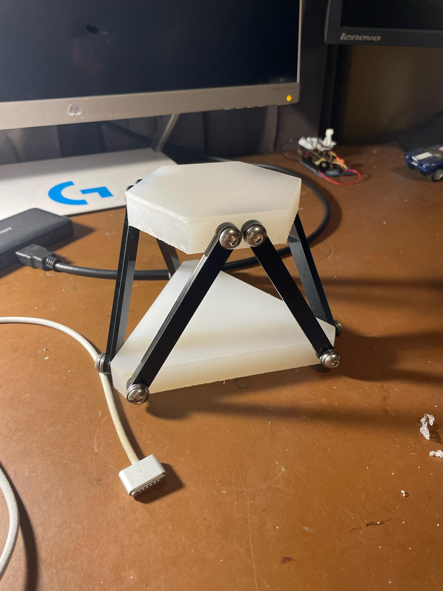
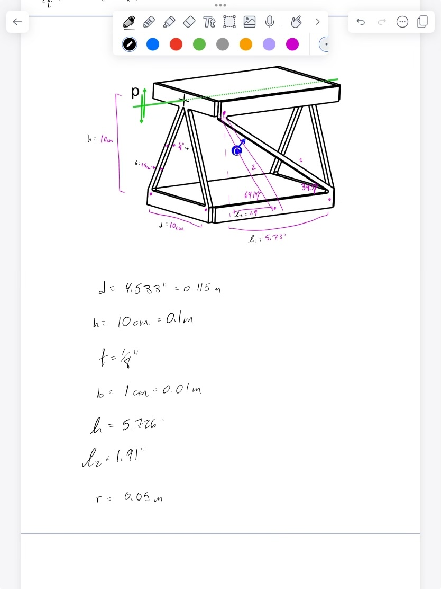
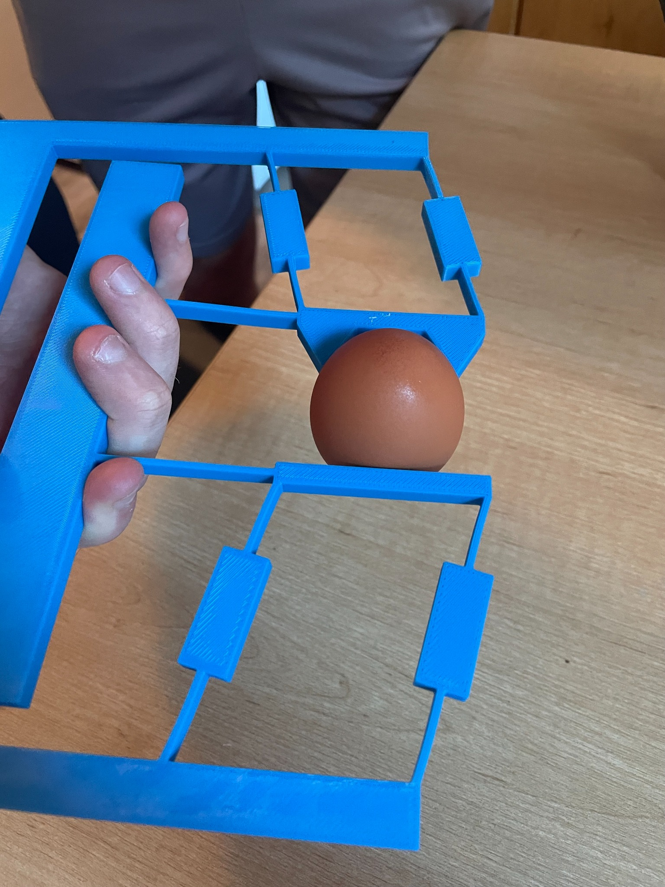
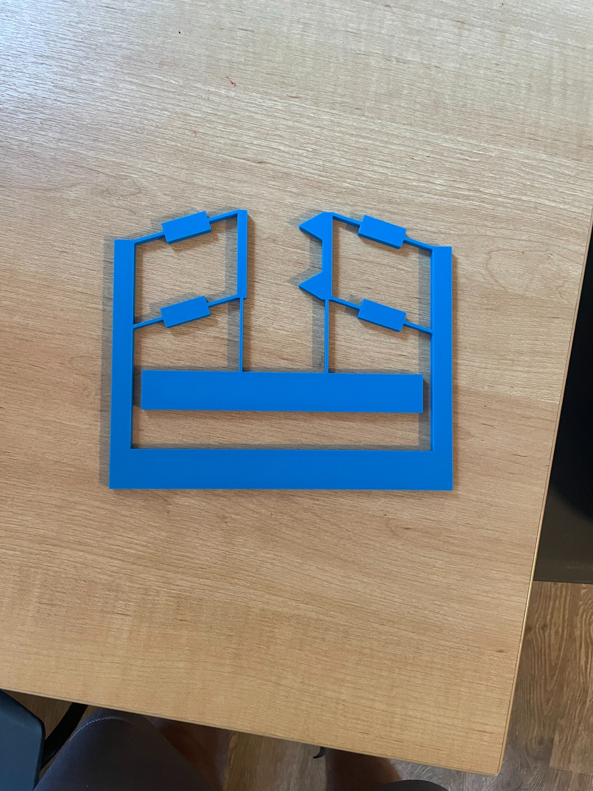
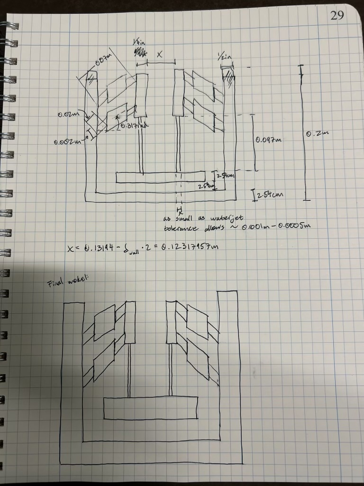
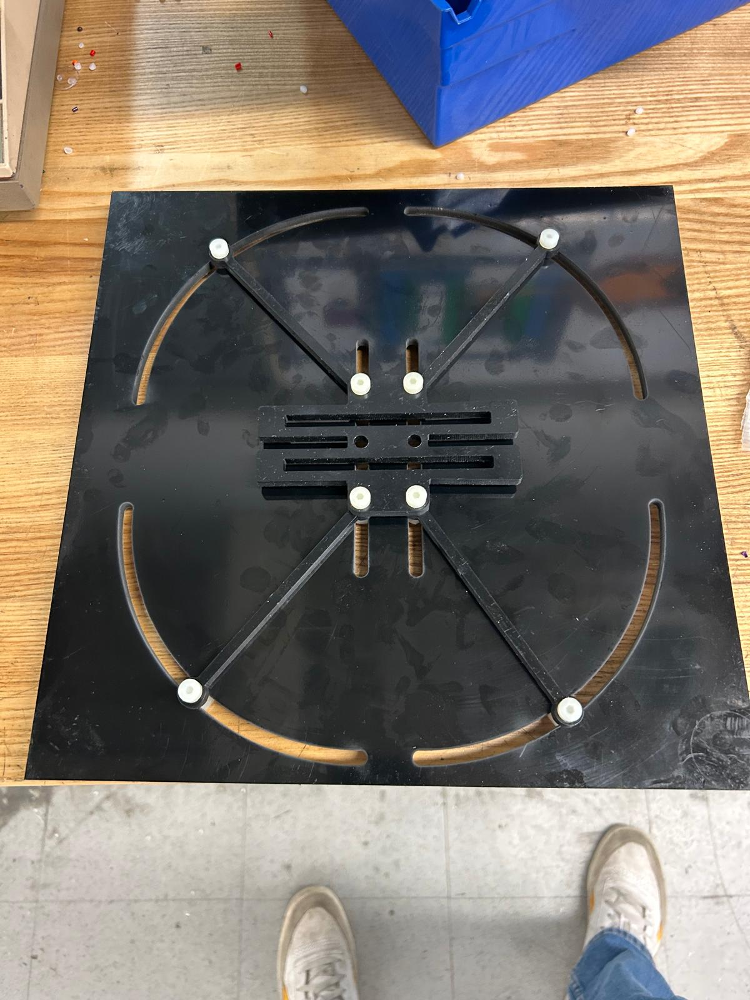
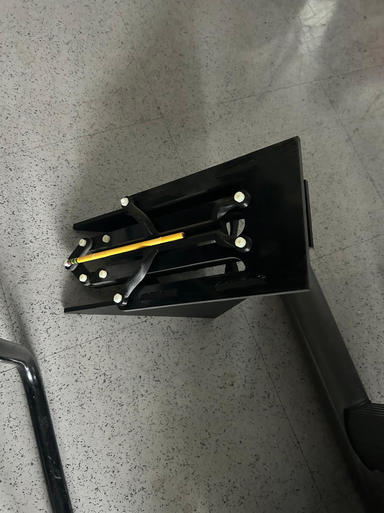

Constraint design
Use geometry to permit desired motion while resisting everything else—and check that fabrication does not add constraints you never modeled.
MIT 2.145 · Design of Compliant Mechanisms
Five rapid design-build-test projects exploring flexures, exact constraint, compliant kinematics, stiffness modeling, and elastic energy storage.
01
Course Overview
MIT 2.145 used a sequence of focused mechanical problem sets to turn compliant-mechanism theory into working hardware.
Across the projects, our teams translated functional requirements into analytical models, selected flexure geometries, fabricated prototypes, and compared physical behavior with predicted performance. The assignments progressed from exact constraint and thermal isolation through screw motion, pseudo-rigid-body modeling, stiffness matrices, and bistable energy storage.
MPS 01
Constraint-Based Design
A flexure interface designed to maintain centering while allowing differential thermal expansion between constrained components.

The interface needed to define all six degrees of freedom, remain stiff under handling loads, avoid sliding interfaces, and accommodate isotropic thermal growth without generating excessive stress or losing concentricity.
We developed equations for flexure displacement and stress under side loads, vertical loads, applied moments, and thermal expansion, then solved for suitable geometry in MATLAB.
Exact constraint is easy to describe schematically but much harder to implement physically without introducing unintended overconstraint. Manufacturing feasibility has to be part of the constraint design from the beginning.
MPS 02
FACT + Screw Motion
A mechanism using interchangeable constraints to demonstrate translation, rotation, and two different screw motions about a common axis.

The device had to demonstrate two screw pitches over the same rotational range, with a target relationship of approximately 3:1 between the two configurations.
Testing and review exposed that our bolted joints behaved more like pin joints than true flexures. We revisited the constraint geometry and redesigned the flexure concept so rotation would come from elastic deformation rather than joint motion.
MPS 03
Pseudo-Rigid-Body Modeling
A compliant gripper designed to transform a single actuator input into controlled, symmetric jaw motion while safely holding an egg.



We used transmission ratios, double-living-hinge geometry, cantilever beam equations, and parameter sweeps to balance actuator motion, jaw closure, gripping force, and structural stiffness.
A 2.5 lb actuator load produced 0.49 in of actuator travel and 0.20 in of jaw closure. The prototype met the tested motion requirements, while Z-direction stiffness remained a limitation.
The project reinforced when a simplified bending model is sufficient and when numerical optimization adds unnecessary complexity. A staged model made the design easier to reason about and debug.
MPS 04
Stiffness Matrices
An adjustable flexure system intended to vary structural stiffness—and therefore natural frequency—over a broad operating range.

Each beam was represented with a local stiffness matrix and transformed into global coordinates using rotation matrices. The component matrices were assembled into a system model and checked against an equivalent spring network.
We applied known forces with a force gauge and measured mass displacement at different flexure angles. Low-frequency motion tests also revealed an important discrepancy: manufacturing clearances allowed unintended pin-joint rotation.
The math can describe the intended structure correctly while the real hardware behaves like a different mechanism. Hole fits, sliding clearances, hard stops, and joint tolerances became first-order design variables rather than drafting details.
MPS 05
Elastic Energy Storage
A manually triggered launcher using a bistable compliant mechanism to store elastic energy and propel a pencil over a 1.5 m obstacle.

We modeled cantilever strain energy and maximum stress, then used a MATLAB grid search to identify feasible combinations of flexure length, width, spacing, and rigid-link geometry. Candidate geometry was checked with Fusion 360 FEA before fabrication.
We did not have time to experimentally validate the final launcher. The modeling process nevertheless made the effect of real energy losses clear: friction, vibration, and aerodynamic losses can dominate the gap between stored elastic energy and useful projectile energy.
Course Takeaways
Use geometry to permit desired motion while resisting everything else—and check that fabrication does not add constraints you never modeled.
Analytical accuracy matters only if the physical joints, tolerances, and boundary conditions behave like the model.
Simple hardware quickly exposes friction, joint motion, stiffness, alignment, and energy losses that are easy to miss in CAD.
Parameter sweeps, FEA, and stiffness matrices are valuable when they answer a design question—not simply because they are available.